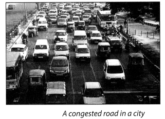

NCERT Solutions for Class 8 Science Chapter 18 Pollution of Air And Water
Topics and Sub Topics in Class 8 Science Chapter 18 Pollution of Air And Water:
| Section Name | Topic Name |
| 18 | Pollution of Air And Water |
| 18.1 | Air Pollution |
| 18.2 | How does Air Get Polluted? |
| 18.3 | Case Study— The Taj Mahal |
| 18.4 | Greenhouse Effect You know that the sun’s rays warm |
| 18.5 | What can be Done? |
| 18.6 | Water Pollution |
| 18.7 | How does Water Get Polluted? |
| 18.8 | What is Potable Water and How is Water Purified ? |
| 18.9 | What Can be Done? |
Pollution of Air and Water Class 8 Science NCERT Textbook Questions
Question 1.
What are the different ways in which water gets contaminated?
Answer:
Following are the ways by which water gets contaminated:
- People dispose of garbage in the water.
- Many industries discharge their harmful chemicals directly into rivers and streams.
- Chemical fertilisers, pesticides and weedicides used in agricultural practices get dissolve in water and are washed away into water bodies from the fields.
- Untreated sewage is directly discharged into water from household activities.
Read More About the essay on pollution
Question 2.
At an individual level, how can you help to reduce air pollution?
Answer:
I can do the following things to reduce air pollution:
- I will use public transport as far as possible.
- I will generate awareness among people to reduce air pollution.
- I will plant more and more trees because trees help to keep the environment clean and reduce air 1 pollution.
- I will not use vehicles for short distances.
Question 3.
Clear, transparent water is always fit for drinking. Comment.
Answer:
No, this is not true that clean, transparent water is always fit for drinking. It is possible that they may carry disease-causing microorganisms. Thus, it is good to purify water before drinking.
Question 4.
You are a member of the municipal body of your town. Make a list of measures that would help your town to ensure the supply of clean water to all its residents.
Answer:
These are the measures that would help our town to ensure the supply of clean water to all its residents:
- Chlorine tablets should be made available.
- Proper cleaning of the water tank from time to time.
- The water supply pipes should not come in contact with the sewage pipes.
Question 5.
Explain the differences between pure air and polluted air.
Answer:
Pure air contains 78% nitrogen, 21% oxygen and 0.03% C02. Other gases such as argon, methane, neon, water vapour, etc. are also found in small quantities. When this air is contaminated by unwanted substances which have harmful effect on both living and non-living things like nitrogen oxide, sulphur oxide, carbon monoxide, etc., is said to be polluted.
Question 6.
Explain circumstances leading to acid rain. How does acid rain affect us?
Answer:
Nitrogen dioxide, sulphur dioxides are the pollutants which react with the water vapour present in atmosphere to form sulphuric acid and nitric acid. These acids come down with the rain, making the rain acidic. This is called acid rain.
Following are the affects of acid rain:
- It increases corrosion of metals.
- It damages buildings and sculptural materials.
- It removes the basic nutrients such as calcium from the soil.
- It causes direct damage to plants and crops.
- It causes skin eruptions in human being.
Question 7.
Which of the following is not a greenhouse gas?
(a) Carbon dioxide
(b) Sulphur dioxide
(c) Methane
(d) Nitrogen
Answer:
(d) Nitrogen
Question 8.
Describe the ‘Greenhouse Effect’ in your own words.
Answer:
Basically, the greenhouse effect means warming of the earth’s environment. When the sun’s ray falls on earth, a part of the radiation that falls on the earth is absorbed by it and a part is reflected back into space. Greenhouse gases present in the atmosphere trap these radiations and do not allow heat to leave. This helps in keeping our planet warm and thus helps in survival. CO2, methane and CO are the gases responsible for this effect.
Question 9.
Prepare a brief speech on global warming. You have to deliver the speech in your class.
Answer:
Good Morning,
Respected teacher and my dear friends,
As we all know the continuous increase in the temperature of earth is called global warming. Global warming is basically caused by pollution of air, excessive heat which is trapped by the greenhouse gases. Global warming is a threat to life as it causes a lot of health problems. We may have to face dire consequences due to global warming.
That’s all friends. Thank you for the attention. Have a good day.
Question 10.
Describe the threat to the beauty of the Taj Mahal.
Answer:
Taj Mahal has become a matter of concern due to pollutants in air that are discolouring its white marble. Acid rains due to increasing air pollution has started corroding the marble. Suspended particulate matter, such as the soot particles emitted by Mathura oil refinery, has contributed towards the yellowing of the marble. Thus making Taj Mahal losing its beauty.
Question 11.
Why does the increased level of nutrients in the water affect the survival of aquatic organisms?
Answer:
Increased level of nutrients in the water affect the survival of aquatic organisms as these act as nutrients for algae to flourish and once these algae die, they serve as food for decomposers like bacteria and a huge amount of oxygen in water body gets used up. This results in decrease in the oxygen level, which may kill aquatic organisms.
Pollution of Air and Water Class 8 Science NCERT Intext Activities Solved
Activity 1 (NCERT Textbook, Page 239)
You may have covered your nose while passing a brick kiln emitting smoke or started coughing while walking on a busy road (Fig. 18.1).

On the basis of your experience, compare the quality of air at the places given below:
A park and a busy road.
A residential area and an industrial area.
A busy traffic intersection at different times of the day, e.g., early morning, afternoon and evening.
A village and a town.
Solution:
When we visit a park we find it full of fresh air and in a busy road we find it polluted due to fumes, smoke, dust and sound.
An industrial area is more polluted as compared to residential area as industrial area gets polluted with chemical pollutants, toxic gases, etc.
In early morning there is iess pollution but in afternoon it becomes a little more polluted than morning and in the evening it becomes extremely polluted.
A town is more polluted than a village.
Activity 2 (NCERT Textbook, Page 240)
You might have read in the newspapers that respiratory problems amongst children are rising day by day. Conduct a survey of households in your neighbourhood and among friends to find out how many children are suffering from respiratory problems.
Solution:
Do it yourself.
Activity 3 (NCERT Textbook, Page 241)
Prepare a table using the pollutants mentioned above (See NCERT textbook at page 241). You may even add more data to the following Table.
Solution:
| Air Pollutants | Sources | Effects |
| 1. CO2 | Vehicles, Industries | Suffocation, global warming |
| 2. Carbon monoxide | Vehicles, Industries | Carbon monoxide poisoning, global warming |
| 3. Chlorofluorocarbons | Refrigerators, air conditioners aerosols, sprays, etc. | Depletion of the ozone layer |
| 4. Nitrogen oxide | Petroleum refineries, agricultural activities | Acid rain |
| 5. Sulphur oxide | Combustion of fuels, industries | Lung damage, acid rain |
Activity 4 (NCERT Textbook, Page244)
You have various options of commuting to your school such as walking, going by bicycle, travelling by bus or other public transport, using a car individually, travelling by carpool. Discuss in your class the impact of each of these options on the quality of air.
Solution:
| Ways of commuting to school | Effect on air pollution |
| 1. Walking | No air pollution |
| 2. Going by bicycle | No air pollution |
| 3. Travelling by bus or other public transport | Decreases air pollution as buses run on CNG. |
| 4. Using a car individually | It increases air pollution as increased number of vehicles will cause more pollution. |
| 5. Travelling by carpool | It decreases air pollution. |
Activity 5 (NCERT Textbook, Page 245)
Try to collect samples of water from a tap, pond, river, well and lake. Pour each into separate glass containers. Compare these for smell, acidity and colour. Complete the following Table.
Solution:
| Smell | Acidity | Colour | |
| Tap Water | No smell | No | Colourless |
| Pond Water | Very smelly | Yes | Muddy |
| River Water | Little smell | Yes | Colourless to little muddy |
| Well Water | No smell | No | Colourless |
| Lake Water | No smell | No | Colourless |
Recall Activity 6 (NCERT Textbook, Page 247)
You had investigated the sewage disposal system of your locality in Class VII. Do you remember how the sewage was collected from your home and where it went thereafter?
Solution:
The underground network of small and big pipes called sewers carries the sewage from the point of production to the point of disposal, i.e., treatment plant.
Activity 7 (NCERT Textbook, Page 247)
Let us construct a water filter with simple, everyday materials.
Take a plastic bottle and cut it into 2 halves at the centre. Use the upper half as a funnel by putting it upside down in the lower half. Make layers in it with paper napkin or a fine cloth followed by, cotton, sand and then gravel. Now pour dirty water through the filter and observe the filtered water.
Discuss the following questions amongst yourselves and with your teacher:
Why do we need to filter water before drinking?
Where do you get your drinking water from?
What will happen if we drink polluted water?
Solution:
Water which is full of dust particles and impurities is unfit for human health thus we need to filter water before drinking it.
We get drinking water from government supply water or hand pump.
Polluted water have disease-carrying microorganisms and dissolved impurities which can make us seriously ill.
Activity 8 (NCERT Textbook, Page 248)
Investigate the level of awareness about water pollution in your area. Col-lect data on the sources of drinking water and the methods of sewage disposal.
What are the common water-borne diseases in the community? You can consult your local doctor/health worker for this. Which are the governmental and non-governmental organisations working in this field? What are the measures being taken by them for generating awareness?
Solution:
Do it yourself.
NCERT Solutions for Class 8 Science Chapter 18 – 1 Mark Questions and Answers
Question 1.
Write two causes of soil pollution. [MSE (Chandigarh) 2005]
Answer:
Two causes of soil pollution are excessive use of chemical fertilisers and disposal of waste materials.
Question 2.
What is the full form of CFC ?
Answer:
CFC — Chloro fluoro carbons
Question 3.
Which of the following is not a greenhouse gas ? [NCERT]
(a) Carbon dioxide
(b) Sulphur dioxide
(c) Methane
(d) Nitrogen
Answer:
(b) Sulphur dioxide and
(d) nitrogen.
Question 4.
What is meant by air pollution ?
Answer:
The presence of unwanted substances in the air which have a harmful effect on living and non-living components is known as air pollution.
Question 5.
What name is given to unwanted substances present in the air ?
Answer:
Air pollutants.
Question 6.
Name the pollutants which are added from natural sources.
Answer:
Smoke and dust from forest fires or volcanic eruptions.
Question 7.
Name the pollutants added by vehicles.
Answer:
Carbon monoxide, carbon dioxide, nitrogen oxides and smoke.
Question 8.
What are the harmful effects of smog ?
Answer:
Smog Causes breathing diseases such as asthma, cough and wheezing in children. ‘
Question 9.
Which gases are released from petroleum refineries ?
Answer:
Sulphur dioxide and nitrogen dioxide.
Question 10.
How are CFCs added in the atmosphere ?
Answer:
CFCs are released from aersol sprays, refrigerators and air conditioners.
Question 11.
What harm is caused by the presence of CFCs ?
Answer:
CFCs destroy the ozone layer which protects us from harmful ultraviolet rays of the sun.
Question 12.
Name one important monument which has been affected by air pollution ?
Answer:
Taj Mahal located at Agra.
Question 13.
Expand SPM.
Answer:
Suspended Particulate Matter.
Question 14.
Name some greenhouse gases.
Answer:
Carbon dioxide, methane, nitrous oxide and water vapour.
Question 15.
What is meant by polluted water.
Answer:
Whenever substances such as sewage, toxic chemicals, silt, etc., which are harmful to life, get mixed with water, the water is said to be polluted.
Question 16.
What is potable water ?
Answer:
Water which is suitable for drinking is called potable water.
Question 17.
How can pollution by industries checked ?
Answer:
The industrial waste should be treated before discharging into the rivers.
Question 18.
What is rain mixed with sulphuric acid called ?
Answer:
Acid rain.
Question 19.
Name two smokeless fuels.
Answer:
LPG and CNG.
Question 20.
Which compound is added to petrol to prevent engines from ‘knocking’ ?
Answer:
A lead compound is added to petrol to prevent engines from knocking.
Question 21.
Name one biodegradable fertiliser.
Answer:
Compost.
Question 22.
What is meant by water table ?
Answer:
The surface of ground water supply is called the water table.
Question 23.
Name three diseases caused by polluted water.
Answer:
Diarrhoea, dysentry and jaundice.
NCERT Solutions for Class 8 Science Chapter 18 – 2 Mark Questions and Answers
Question 1.
What should be our main strategy to deal with the environmental problems faced by us ? [DAV2008]
Answer:
To develop technology that uses :
- Renewable sources of energy like solar energy, wind energy, etc. and avail maximum benefit from them.
- Less amount of non-renewable sources of energy, so that they last longer.
Question 2.
Mention two human activities which affect the quality of the soil on a large scale. [DAV2007]
Answer:
- Use of pesticides and fertilisers affect the quality of soil.
- Overgrazing done by animals damages the soil by eating the vegetation.
Question 3.
What are the two ways to conserve soil ? [DAV2005]
Answer:
- By planting more trees and grass.
- By constructing dams and river embankments.
Question 4.
Explain the differences between pure air and polluted air ? [NCERT]
Answer:
Pure air means air which does not have any undesirable gases and particles in it. It does not’ affect living or non-living things. But polluted air contains harmful pollutants which affect living and non-living things.
Question 5.
Clear, transparent water is always fit for drinking. Comment. [NCERT]
Answer:
This statement is not correct because clear and transparent water may contain harmful bacteria which cannot be seen. They can cause diseases in human beings.
Question 6.
Why are many people suffering from respiratory problems these days ?
Answer:
Many people are suffering from respiratory problems due to air pollution.
Question 7.
The number of vehicles are increasing rapidly. How is this causing air pollution ?
Answer:
The vehicles produce high levels of carbon monoxide, carbon dioxide, nitrogen oxides and smoke, which contribute to air pollution.
Question 8.
How is carbon monoxide produced the vehicles ?
Answer:
Carbon monoxide is produced by incomplete combustion of fuels such as petrol and diesel.
Question 9.
How is smog produced ?
Answer:
Oxides of nitrogen combine with other pollutants and fog contributing to the formation of smog.
Question 10.
How is sulphur dioxide produced in the atmosphere ?
Answer:
Sulplur dioxide is produced by combustion of fuels like coal in power plants.
Question 11.
How is suspended particulate matter harmful ?
Answer:
Suspended particulate matter reduces visibility and if inhaled causes respiratory diseases.
Question 12.
Give two factors responsible for spoiling of Taj Mahal?
Answer:
Taj Mahal is being spoilt by acid rain and by suspended particulate matter.
Question 13.
Does acid rain affect the soil and plants ?
Answer:
Yes, acid rain does affect the soil and plants.
Question 14.
Give the advantage of greenhouse effect.
Answer:
Due to greenhouse effect, the temperature on earth is maintained. As a result, life has been possible on the earth.
Question 15.
Why has the Gangotri glacier in the Himalayas started melting ?
Answer:
The Gangotri glacier has started melting due to global warming.
Question 16.
“Say no to crackers” campaign was organised by school children. Why ?
Answer:
This campaign was started by school children to reduce air pollution levels during Diwali.
Question 17.
Which is better – burning of dry leaves or putting them in a compost pit ?
Answer:
Putting the dry leaves in a compost pit is better because burning increases air pollution.
Question 18.
What are the different ways in which water becomes polluted by human beings ?
Answer:
Water becomes polluted by washing clothes, batning, sewage, and toxic chemicals from factories.^
Question 19.
How does Ganga river get polluted ?
Answer:
Ganga river gets polluted by disposal of large quantities of garbage, untreated sewage, dead bodies, etc., directly into the river.
Question 20.
Why do we say that Ganga is ‘dead’ at many places ?
Answer:
We say this because at certain places the pollution level is so high that aquatic life cannot survive.
Question 21.
What are electrostatic precipitators ?
Answer:
Electrostatic precipitators are installed in factories to remove the solid particles such as carbon from waste gases before they are let out into the atmosphere.
Question 22.
Name the protocol signed by countries to check global warming.
Answer:
The Kyoto protocol is an agreement under the United Nations Convention signed by many countries to check global warming.
Question 23.
What steps have been taken by Delhi Government to check pollution by vehicles ?
Answer:
Delhi government decided to convert the vehicles to use Compressed Natural Gas (CNG) and unleaded petrol.
NCERT Solutions for Class 8 Science Chapter 18 – 3 Mark Questions and Answers
Question 1.
Mention three causes for erosion of soil. [KVS2007]
Answer:
Soil erosion is caused by water and wind due to three major factors :
- Deforestation — due to increasing population and increasing industrialisation.
- Overgrazing — by large animal populations has destroyed vegetation and result in barren land.
- Poor Farming Method — ploughing, loosens the soil and destroys its natural resources.
Question 2.
What is acid rain ? Why is it harmful to us ? [NCT 2011]
Or
Explain circumstances leading to acid rain. How does acid rain affect us ?
Answer:
The industries release pollutants like sulphur dioxide and nitrogen dioxide. These gases react with the water vapour present in the atmosphere to form sulphuric acid and nitric acid. These come down with the rain, making the rain acidic. Acid rain is harmful to us because it destroys buildings and damages crops and trees.
Examples:
- affects the monuments like Taj Mahal.
- spoils the growth of plants.
- causes irritation of eyes in human beings.
Question 3.
Why is greenhouse effect called so ? How does it cause global warming ? [NCT 2010]
Answer:
It is called so because earth’s atmosphere acts like a green house made of glass in which sunlight enters through transparent glass but the heat released by plants in the form of infrared radiations is not allowed to escape. Carbon dioxide does not allow heat to escape causing global warming.
Question 4.
Describe the ‘Green House Effect’ in your own words. [NCERT]
Answer:
The heat rays of the sun (infra-red) can pass through the carbon dioxide present in the atmosphere. After reflection from the earth they are not allowed to leave the atmosphere. The trapped heat rays in the carbon dioxide from a warm blanket around the earth. This effect is known as greenhouse effect.
Question 5.
Why does the increased level of nutrients in the water affect the survival of aquatic organisms? [NCERT]
Answer:
The nitrates and phosphates present in fertilisers are washed into the ponds. They are consumed by the algae. When they die, they are decomposed by bacteria. During this process lot of oxygen is used and other aquatic animals may find it difficult to survive.
Question 6.
What steps have been taken by Supreme Court to save the Taj Mahal ?
Answer:
Supreme Court has ordered the industries to use cleaner fuels like CNG and LPG. Also the automobiles are ordered to .use unleaded petrol in the Taj zone.
Question 7.
What is “Marble Cancer” ?
Answer:
Due to the acid rain the marble of Taj Mahal has become yellow and is degrading. This is known as “Marble Cancer”.
Question 8.
What is the Ganga Action Plan ?
Answer:
Ganga Action Plan was launched in 1985 to save the river Ganga. Its aim is to reduce pollution levels by treating domestic sewage, building electric crematoria and reducing industrial wastage.
Question 9.
How is chemical contamination of water caused ?
Answer:
Many industries discharge harmful chemicals into rivers and streams causing pollution of water. Oil refineries, paper factories, textiles and sugar mills release chemicals like arsenic, lead and fluorides in the rivers.
Question 10.
“Fertilisers are good for crop but cause pollution of soil and water”. Comment.
Answer:
Fertilisers enhance crop yield but these chemicals dissolve in water and get washed into water bodies from the fields. These seep into the ground to pollute ground water.
Question 11.
How does ground water get polluted ? How is it harmful ?
Answer:
Untreated sewage seeps into the ground water. Since it contains bacteria, viruses, fungi and parasites, it can cause diseases like cholera, typhoid and jaundice.
Question 12.
Can hot water be a pollutant ? Explain.
Answer:
Yes, hot water can be a pollutant. It raises the temperature of the water adversely affecting the animals and plants living in it.
Question 13.
How are the suspended particles added in the air ?
Answer:
Suspended particles are added in the air by :
- Automobiles which bum petrol and diesel.
- Certain factories.
- Power plants.
- Mining of ores.
Question 14.
What is meant by water harvesting ? How is it done ?
Answer:
Water harvesting means conservation of rain water. It is done by allowing rain water, falling on the roofs of buildings to flow into a deep trench in the ground. In this way, the ground water level is increased. The rain water is not allowed to flow into the rivers.
Question 15.
Why should cars be fitted with catalytic converters ?
Answer:
Catalytic converters fitted in the cars prevent pollution of air. It changes the harmful exhaust gases like carbon monoxide and nitrogen dioxide into harmful carbon dioxide, nitrogen and water.
NCERT Solutions for Class 8 Science Chapter 18 – 5 Mark Questions and Answers
Question 1.
You have to deliver the speech in your class. Prepare a brief speech on global warming. [NCERT]
Answer:
Global warming is the gradual increase in average temperature of the earth’s atmosphere. This is caused due to the increased green house effect.
The amount of carbon dioxide in the atmosphere is increasing due to the following factors
- Deforestation
- Increased human activities
- Industrialisation
Due to this global warming is taking place. It is expected that if it continues at this rate the glaciers will melt and the level of water in the oceans will rise.
Question 2.
At an individual level, how can you help reduce air pollution ? [NCERT]
Answer:
Air pollution can be reduced by taking following steps :
- Use CNG or unleaded fuel for the vehicles.
- Say no to crackers during Diwali.
- Using alternative sources of energy instead of fossil fuels.
- By planting more trees.
- By not burning dried leaves, instead putting them in a compost pit.
Question 3.
What are the different ways in which air gets polluted ?
Answer:
Air pollution is caused by :
- Smoke and dust from forest fires.
- Volcanic eruptions.
- Automobile exhausts.
- Factories and power plants.
- Burning of fire wood and dung cakes.
Question 4.
How do industries contribute to air pollution ?
Answer:
- Petroleum refineries release gaseous pollutants like sulphur dioxide and nitrogen dioxide.
- Power plants release sulphur dioxide due to burning of coal.
- Power plants give out tiny ask particles.
- Industrial processes also release particles in air.
Question 5.
List some ways by which water can be made safe for drinking.
Answer:
Water can be made safe for drinking :
- By filtering it, e.g., a candle type filter is used at home.
- By boiling the water to kill the germs. ,
- By adding chlorine tablets or bleaching powder.
- Ozone gas or iodine can be used.
- Ultraviolet rays are used in some water treatment systems.
Question 6.
As an individual, what methods can we use to save water ?
Answer:
As an individual
- We avoid wastage of water.
- Reuse the water
- Recycle the water.
- Close the taps when water is hot required.
- Repair the taps to prevent leakage.
Question 7.
What is Van Mahotsav ? When is it observed ? What is the advantage of this project ?
Answer:
Van Mahotsav is a programme undertaken for planting of trees every year in the month of July.
By planting more trees
- greenhouse effect is reduced
- dust particles in the air are reduced.
NCERT Solutions for Class 8 Science Chapter 18 MCQs
Question 1.
Water pollution is not caused by
(a) burning of fossil fuels
(b) bathing in ponds
(c) agricultural wastes
(d) industrial wastes
Answer:
(a)
Question 2.
Potable water
(a) cannot have smell
(b) has impurities
(c) has harmful chemicals
(d) has micro-organisms
Answer:
(a)
Question 3.
High concentration of which gas will not cause air pollution
(a) oxygen
(b) nitrogen dioxide
(c) carbon dioxide
(d) carbon monoxide
Answer:
(a)
Question 4.
Potable water is
(a) not fit for drinking
(b) fit for drinking dH
(c) only fit for watering plants
(d) only fit for bathing
Answer:
(b)
Question 5.
When domestic sewage/fertilisers is released into the rivers, the growth of algae and bacteria is
(a) promoted
(b) not affected
(c) inhibited
(d) none of these
Answer:
(a)
Question 6.
The pollutants in water can be recognised by
(a) bad taste
(b) offensive odour
(c) growth of aquatic weeds
(d) all the above
Answer:
(d)
Question 7.
Select the water-borne disease out of the following
(a) Cholera
(b) Tuberculosis
(c) Dengue
(d) Malaria
Answer:
(a)
Question 8.
To remove the suspended impurities from water at home the substance used is
(a) potash alum
(b) chlorine
(c) potassium dichromate
(d) salt
Answer:
(a)
Question 9.
Ozone layer in the atmosphere depleted by
(a) LPG
(b) CFC
(c) CNG
(d) Acid rain
Answer:
(b)
Question 10.
The gas responsible for global warming is
(a) Carbon monoxide
(b) Carbon dioxide
(c) Nitrogen dioxide
(d) Sulphur dioxide
Answer:
(b)
More CBSE Class 8 Study Material
- NCERT Solutions for Class 8 Maths
- NCERT Solutions for Class 8 Science
- NCERT Solutions for Class 8 Social Science
- NCERT Solutions for Class 8 English
- NCERT Solutions for Class 8 English Honeydew
- NCERT Solutions for Class 8 English It So Happened
- NCERT Solutions for Class 8 Hindi
- NCERT Solutions for Class 8 Sanskrit
- NCERT Solutions